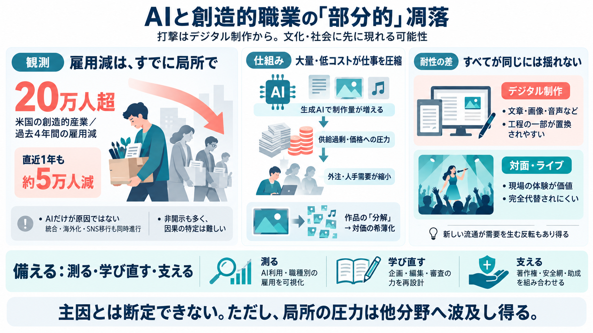

FUTURE UNSCRIPTED:
THE IMPACT OF GENERATIVE ARTIFICIAL INTELLIGENCE ON ENTERTAINMENT INDUSTRY JOBS 28 Figure 5: Job Disruption in the Enter…

生成AIは低コストで大量に制作物を作れます。その結果、制作工程（人の仕事）の一部が置換される可能性が論点になっています。
米国で過去4年間に「creative（創造的）」産業で20万人超の雇用が失われ、直近1年でも約5万人が追加で失われたとされます。
AI利用は企業が明確に開示しないことが多く、雇用減の原因をAIに結びつけるのが難しいとされています。
少なくとも「デジタル・アートの各下位領域」で広く雇用が失われている点は、AI影響の間接証拠として示されています。
生成AIは、完成品だけでなく制作過程にも入り込み得ます。すると供給が増え、価格圧力や人手需要の縮小を通じて雇用が連鎖的に揺れます。
デジタル転換の過去比較では、音楽はサブスクで形が変わりつつライブが下支えした一方、映像と出版はモデルが圧迫されたと説明されます。
AIは作品の一部を作り直し・再利用しやすくする方向に働き得ます。市場が「元の制作物」として消費されず“素材として分解”されると、対価が薄れ得ます。
技術は既存産業を直線的に破壊するだけではない、という反例が示されます。
記事の到達点は断定ではなく、文化・社会にまず影響が出る可能性が高い、という見立てです。
強みは、時系列データ・非開示による因果特定の難しさ・過去のデジタル転換の比較という複数レイヤーで議論している点です。
因果を過信せず、職種別・工程別のデータ（開示、賃金、外注比率、雇用形態の変化）を補うことが鍵です。
現時点ではAIが主因だと断定できませんが、デジタル制作が置換されやすい構造と、ビジネスモデルの耐性差は強い示唆を与えます。
THE IMPACT OF GENERATIVE ARTIFICIAL INTELLIGENCE ON ENTERTAINMENT INDUSTRY JOBS 28 Figure 5: Job Disruption in the Enter…
BLS numbers for May 2025 indicate the total number of jobs in the advertising, PR, and related services numbered 488,600…
Overall, nearly half the media job losses of the last four years have been concentrated in the movie & sound recording s…
Despite IATSE’s positions, job loss has hit Hollywood’s behind-the-scenes workers. Since 2022, Los Angeles County has lo…
Our review of economic evidence and structured case studies suggest that AI is generating output gains in the creative i…